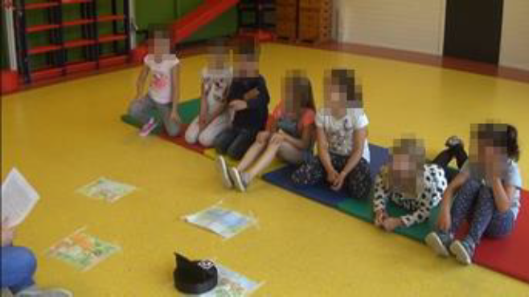

SurfaceBot to improve storytelling
Summary
For my Bachelor thesis in Creative Technology, I researched how technology can enhance children’s ability to remember stories. I designed and evaluated a storytelling activity that combined a human narrator with a SurfaceBot (a small robot with a screen and wheels that can move, display facial expressions, and play sounds). The goal was to test whether a robot could improve children’s recall of story events.
Context
Storytelling is a powerful educational tool, helping children connect information to personal experience. The SurfaceBot prototype, developed by the University of Twente’s Human Media Interaction group, was used as a way to support stories with visuals, emotions, and movement. I wanted to explore whether using a robot in collaboration with a human storyteller could improve learning outcomes for children aged six to eight.
Process
The start was a literature review about storytelling with robots, multimedia learning, and children’s memory. Afterwards I spoke with a primary school teacher and a children’s hospital storytelling volunteer to learn strategies for keeping attention and using tangible objects effectively. The next step was selecting and adapting a story for the activity. I created four illustrated locations (village, forest, river, lake) where the SurfaceBot could move to. I choose robot actions—emotions (happy, sad, fear), sounds (swallow, hiccup, night noise), and movement between locations.

Results
The final activity featured a human storyteller supported by the SurfaceBot, which emphasized key
moments with movements, expressions, and sounds. The design aimed to make the story more
immersive without overwhelming children with distractions. The control group listened the same story
without the SurfaceBot. A questionnaire was used to observe the recall factor in each group and the children's attention
span was observed during the sessions.
The study showed a significant positive effect: children who experienced the story with the
SurfaceBot remembered events better than those who heard the story alone. While the
small sample size and group differences limited the certainty of conclusions, the findings
suggest strong potential for robots as educational storytelling companions.
Reflection
This project taught me how to conduct structured user research with children, design experiments, and balance theory with practice. I learned the importance of relevance in multimedia design—actions should support the narrative rather than distract from it. It also sparked my interest for creating interactive experiences that merge technology, storytelling, and learning.